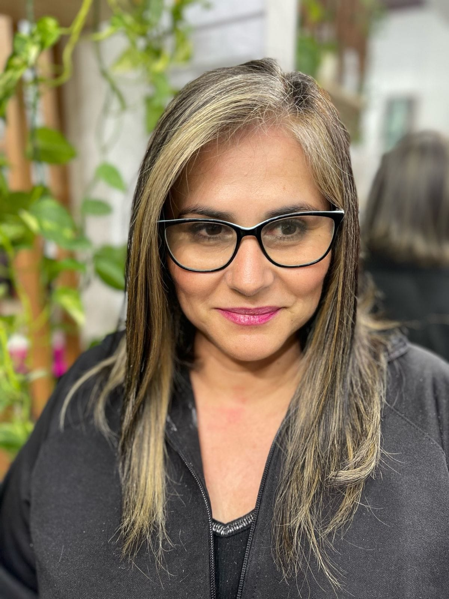

Oi, meu nome é Nara e eu sou um apaixonada por crochê!
Nasci em Cruz Alta. Lá, tínhamos um clube de mães onde minha avó, Maria, era professora. Desde criança, já amava tudo sobre artesanato.
Desde que peguei minha primeira agulha e um novelo de lã, aos sete anos de idade, nunca mais parei de criar.
O crochê não é apenas um hobby para mim, é, também, uma forma de expressão.
Sou apaixonada por trabalhar com linhas.